facing not simulated, abilities off
engine 1655d2ed, 2026-11-05
| id | situation | A roles | B roles | predicted rate A | measured rate A | agree | stalls (seeds) | none seeds | firing_capable A / B | median seed |
|---|---|---|---|---|---|---|---|---|---|---|
| L-0039 | cover | 2 Bombard + 3 Interceptor + 3 Vanguard | 3 Bastion + 2 Bombard + 3 Warden | 0.25 | 0.00 | disagree | 0 (-) | - | -1 / -1 | 10 |
| L-0055 | chokepoint | 12 Vanguard + 12 Warden | 8 Interceptor + 8 Raider + 8 Vanguard | 0.98 | 1.00 | agree | 0 (-) | - | 7.0 / 22.0 | 10 |
| L-0073 | city | 12 Vanguard + 12 Warden | 8 Interceptor + 8 Raider + 8 Vanguard | 0.75 | 0.00 | disagree | 20 (1 2 3 4 5 6 7 8 9 10 11 12 13 14 15 16 17 18 19 20) | - | 12.0 / 2.0 | 10 |
| L-0084 | slope | 12 Bombard + 14 Vanguard + 14 Warden | 18 Bombard + 19 Vanguard + 19 Warden | 0.60 | 0.00 | disagree | 0 (-) | - | 18.0 / 49.0 | 10 |
| id | situation | A roles | B roles | predicted rate A | measured rate A | agree | stalls (seeds) | none seeds | firing_capable A / B | median seed |
|---|---|---|---|---|---|---|---|---|---|---|
| L-0039 | cover | 2 Bombard + 3 Interceptor + 3 Vanguard | 3 Bastion + 2 Bombard + 3 Warden | 0.25 | 0.00 | disagree | 0 (-) | - | -1 / -1 | 10 |
heuristic target 0.25, measured 0.00, gap 25 pts (not scored)
What to expect: Red crosses open ground toward blue's three cover boxes; units go round the boxes, none through them; in the control strip (no boxes) red walks straight.
Approve means: Units go round the boxes and the boxes block walking; sight through the boxes is stage 4, not judged here.
Deny means: A unit stands inside a box or crosses one; name the unit and frame.
blocked unit-frames: 0
| role | A mean survivors | B mean survivors | A start | B start |
|---|---|---|---|---|
| Bastion | 0.0 | 3.0 | 0 | 3 |
| Bombard | 2.0 | 2.0 | 2 | 2 |
| Interceptor | 3.0 | 0.0 | 3 | 0 |
| Vanguard | 3.0 | 0.0 | 3 | 0 |
| Warden | 0.0 | 3.0 | 0 | 3 |
median seed 10 strip (first shot outlined)
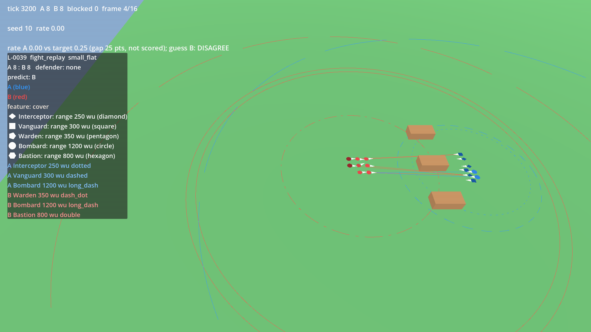
control: the same fight without the ground (features emptied)
seeds: 1 2 3 4 5 6 7 8 9 10 11 12 13 14 15 16 17 18 19 20
| id | situation | A roles | B roles | predicted rate A | measured rate A | agree | stalls (seeds) | none seeds | firing_capable A / B | median seed |
|---|---|---|---|---|---|---|---|---|---|---|
| L-0055 | chokepoint | 12 Vanguard + 12 Warden | 8 Interceptor + 8 Raider + 8 Vanguard | 0.98 | 1.00 | agree | 0 (-) | - | 7.0 / 22.0 | 10 |
heuristic target 0.98, measured 1.00, gap 2 pts (not scored)
What to expect: Blue's arc holds at the mouth of the gap; red files into the gap and queues behind its front unit; no unit stands inside a wall; in the control strip (same fight, no walls) red spreads out and reaches the arc at once.
Approve means: The walls stop red units and the queue at the gap is the thing I see, so the chokepoint works as ground.
Deny means: A red unit stands inside a wall, goes through one, or the queue never forms; name the frame.
blocked unit-frames: 14
| role | A mean survivors | B mean survivors | A start | B start |
|---|---|---|---|---|
| Interceptor | 0.0 | 0.0 | 0 | 8 |
| Raider | 0.0 | 0.0 | 0 | 8 |
| Vanguard | 12.0 | 0.0 | 12 | 8 |
| Warden | 12.0 | 0.0 | 12 | 0 |
median seed 10 strip (first shot outlined)
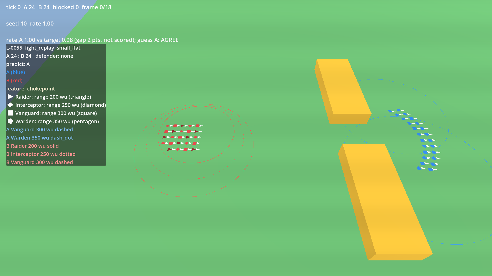
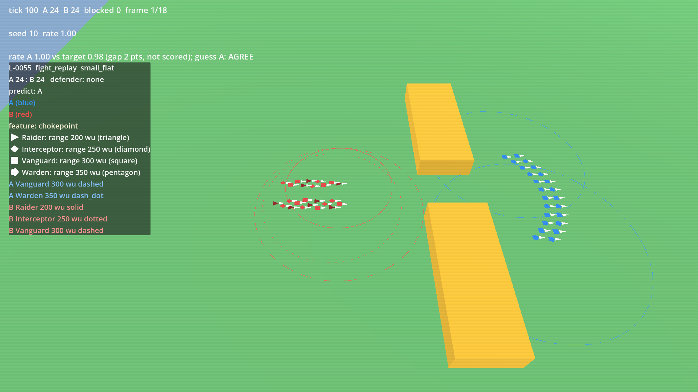
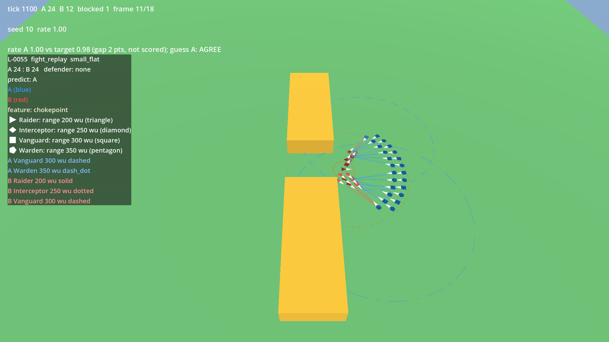
control: the same fight without the ground (features emptied)


seeds: 1 2 3 4 5 6 7 8 9 10 11 12 13 14 15 16 17 18 19 20
| id | situation | A roles | B roles | predicted rate A | measured rate A | agree | stalls (seeds) | none seeds | firing_capable A / B | median seed |
|---|---|---|---|---|---|---|---|---|---|---|
| L-0073 | city | 12 Vanguard + 12 Warden | 8 Interceptor + 8 Raider + 8 Vanguard | 0.75 | 0.00 | disagree | 20 (1 2 3 4 5 6 7 8 9 10 11 12 13 14 15 16 17 18 19 20) | - | 12.0 / 2.0 | 10 |
heuristic target 0.75, measured 0.00, gap 75 pts (not scored)
What to expect: Red enters the city by its streets, only between buildings; blue's arc inside fires on red as it comes; in the control strip (no buildings) red walks straight in.
Approve means: Units walk the streets and stop at building edges; the city slows red down.
Deny means: A unit stands inside a building or crosses one; name the unit and frame.
blocked unit-frames: 83
| role | A mean survivors | B mean survivors | A start | B start |
|---|---|---|---|---|
| Interceptor | 0.0 | 5.0 | 0 | 8 |
| Raider | 0.0 | 2.0 | 0 | 8 |
| Vanguard | 12.0 | 3.0 | 12 | 8 |
| Warden | 12.0 | 0.0 | 12 | 0 |
median seed 10 strip (first shot outlined)
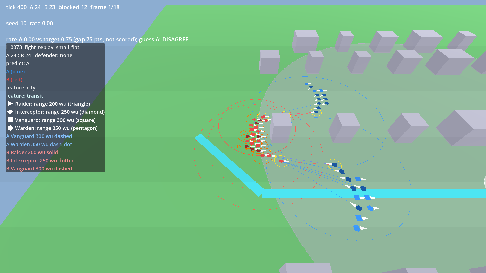
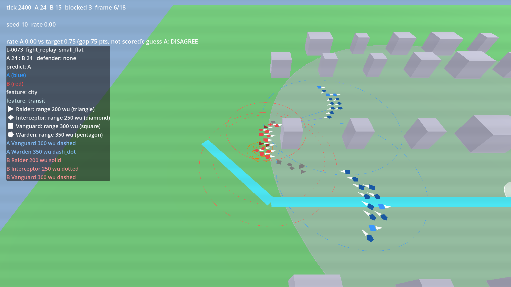
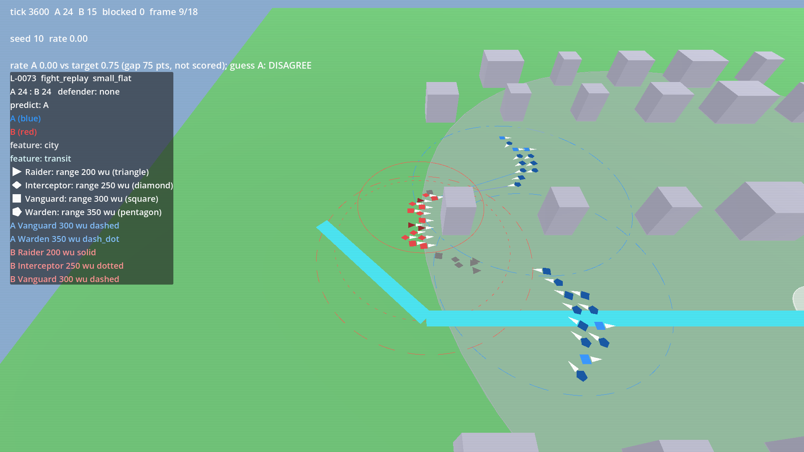
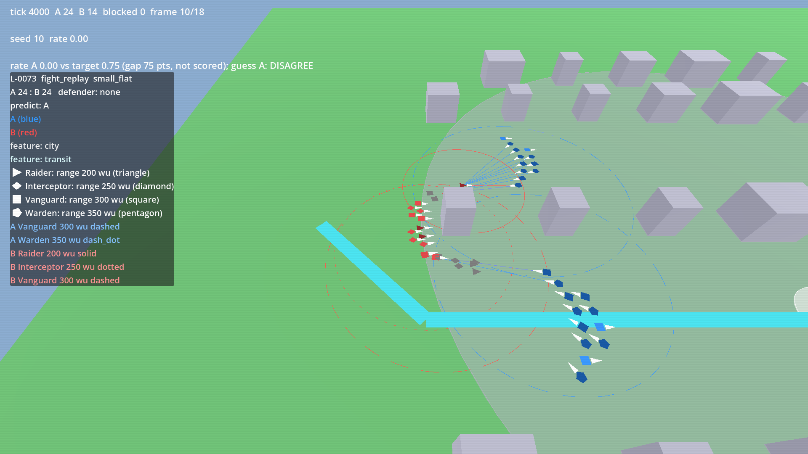
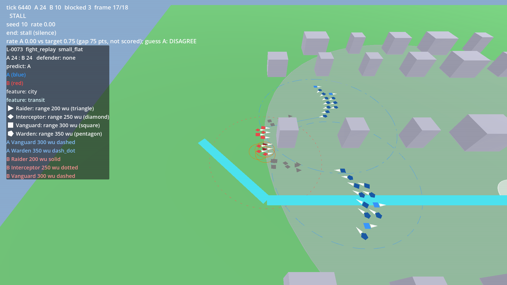
control: the same fight without the ground (features emptied)


seeds: 1 2 3 4 5 6 7 8 9 10 11 12 13 14 15 16 17 18 19 20
| id | situation | A roles | B roles | predicted rate A | measured rate A | agree | stalls (seeds) | none seeds | firing_capable A / B | median seed |
|---|---|---|---|---|---|---|---|---|---|---|
| L-0084 | slope | 12 Bombard + 14 Vanguard + 14 Warden | 18 Bombard + 19 Vanguard + 19 Warden | 0.60 | 0.00 | disagree | 0 (-) | - | 18.0 / 49.0 | 10 |
heuristic target 0.60, measured 0.00, gap 60 pts (not scored)
What to expect: Red walks the ribbon up the slope slowly, one file at a time; blue's arc on the top fires down; no red unit climbs the cliff beside the ribbon; in the control strip (no slope) red crosses in a straight line at full pace.
Approve means: The climb is slower than the control and the cliff is not crossed, so the slope works as ground.
Deny means: Red climbs faster than the control, crosses the cliff, or stalls at the foot with no queue; name the frame.
blocked unit-frames: 31
| role | A mean survivors | B mean survivors | A start | B start |
|---|---|---|---|---|
| Bombard | 0.0 | 18.0 | 12 | 18 |
| Vanguard | 0.0 | 3.0 | 14 | 19 |
| Warden | 0.0 | 3.0 | 14 | 19 |
median seed 10 strip (first shot outlined)
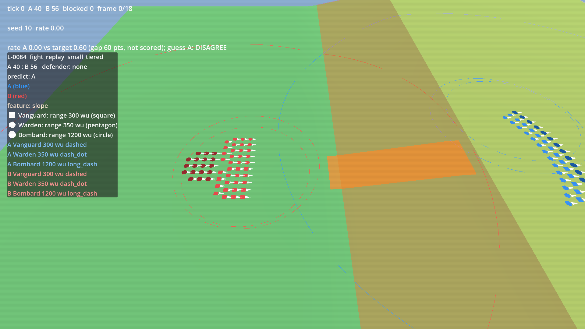
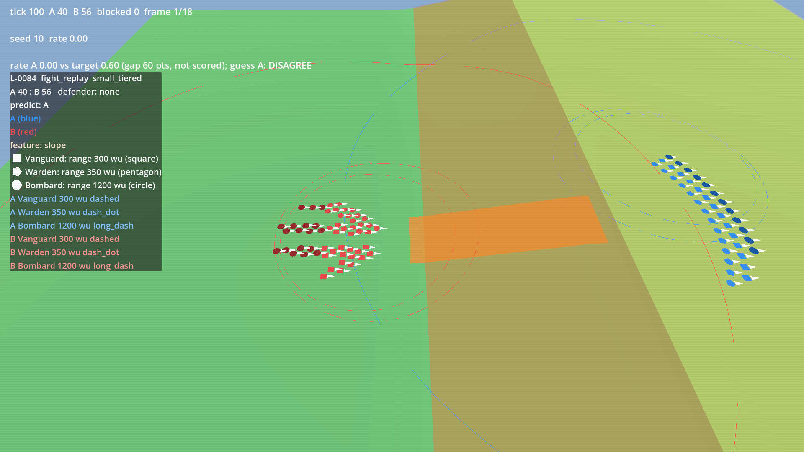
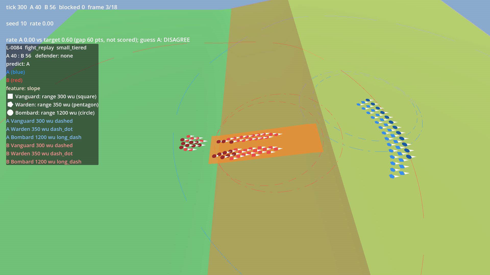
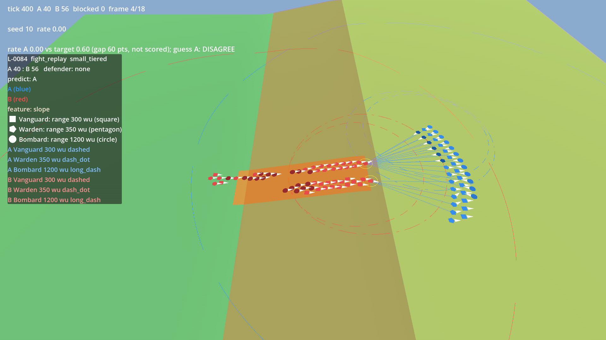
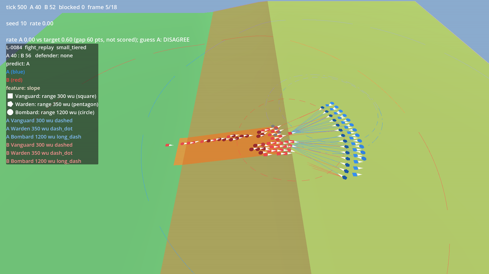
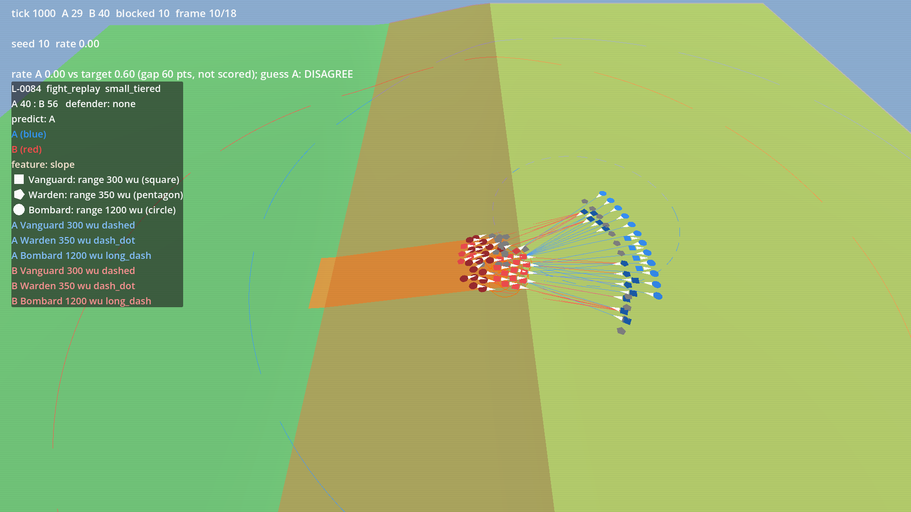
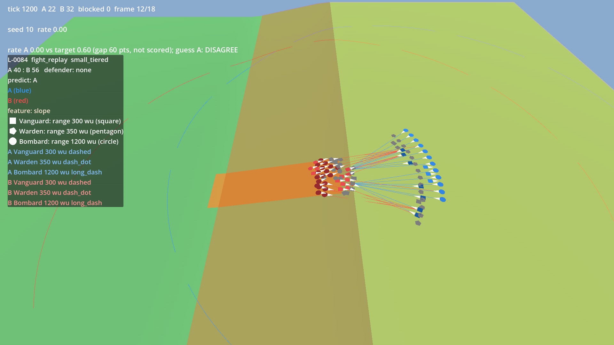
control: the same fight without the ground (features emptied)


seeds: 1 2 3 4 5 6 7 8 9 10 11 12 13 14 15 16 17 18 19 20
Side A blue, side B red. Answer in verdicts.md: | id | verdict | feedback | with verdict A, B, draw or deny.